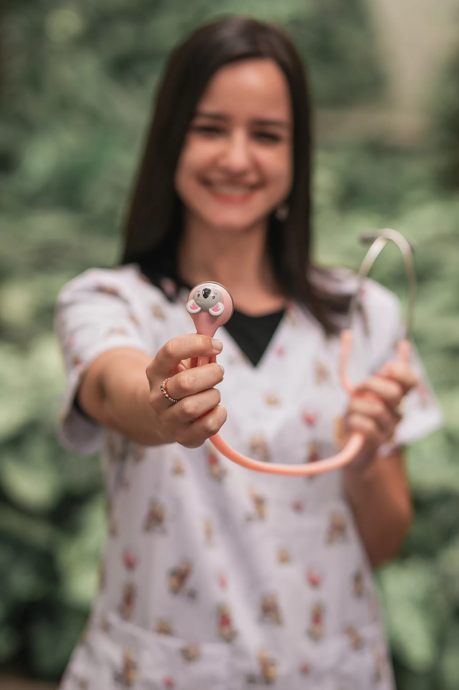
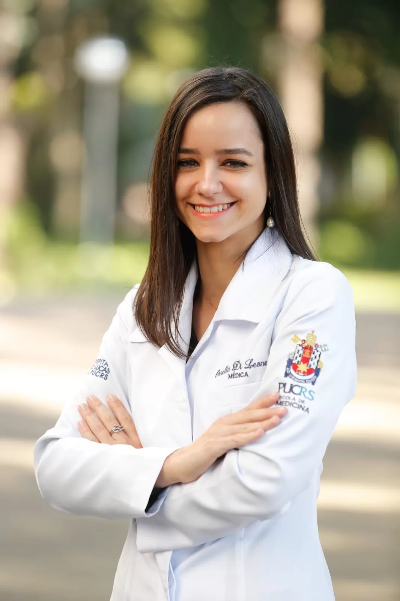

Consulta de Queixas Agudas
avaliação e manejo de febre, infecções agudas, dores agudas, entre outros.

Estou aqui para te ajudar neste universo da maternidade, contribuindo para que ela seja mais leve.
Vamos apreciar juntas cada conquista do seu pequeno. Meu objetivo é prevenir doenças futuras, te ensinando jeitos mais saudáveis de viver – sempre baseado em evidência científica.
Buscarei te ensinar a identificar os sinais de alerta das principais patologias pediátricas e como agir, para que possas se sentir mais autoconfiante e segura nas tomadas de decisões.
Vou procurar entender melhor as demandas do seu filho através de escuta, acolhimento e olho no olho, e vou gostar muito de conhecer os principais cuidadores e saber como é o espaço onde a sua criança vive. Vamos juntas!

Crescer saudável não é só um direito. É uma arte que construímos juntos, todos os dias.
Acompanhamento de rotina da criança e do adolescente (puericultura) – do recém nascido ao adolescente. Avaliação integral da saúde física e mental e do contexto sociocultural na qual o indivíduo está inserido.
avaliação e manejo de febre, infecções agudas, dores agudas, entre outros.
Orientações importantes sobre os primeiros cuidados com o bebê.
Do recém nascido ao adolescente. Avaliação integral da saúde física e mental e do contexto sociocultural na qual o indivíduo está inserido
Atendimento online para tirar dúvidas e garantir suporte ágil.
Para agendar sua tele consulta, entre em contato por email clicando aqui.
Antes de me apaixonar pela pediatria, eu me interessei pelas neurociências, participando de pesquisas acadêmicas na área de envelhecimento e cérebro. Me encantei primeiro pelos idosos, e, ao final da faculdade, pelas crianças. Hoje, como pediatra, penso muito sobre esta transformação da criança num ser adulto. Sendo assim, é fundamental que se busque a prevenção para obter maior qualidade de vida a longo prazo.
Sabemos que muitos pais só procuram o pediatra quando algo não vai bem. Mas e se pudéssemos inverter essa lógica?

Desde o primeiro atendimento, nos sentimos acolhidos pela Dra Ornella.
De um médico pediatra, não esperamos somente competência técnica, mas também carinho e empatia com as crianças. Nos sentimos muito seguros com todo suporte e direcionamento, em anos nunca tinha encontrado uma médica tão boa. Hoje temos 2 filhas e fazemos questão de absolutamente tudo ser regido por ela, muito obrigado por tudo.
Encontrar a Dra. Ornella foi um grande presente pra gente! Desde a gestação eu desejei uma pediatra aberta ao diálogo e que respeitasse nossas escolhas familiares nos orientando sempre que necessário. O Liam já tinha passado por alguns pediatras quando tivemos a sorte desse encontro. É uma pediatra acolhedora e carinhosa, que dá espaço para as infinitas dúvidas e que realmente se importa conosco enquanto família. Uma profissional ímpar, dedicada e indispensável no desenvolvimento do nosso pequeno! Somos muito felizes por tê-la nos acompanhando e nos orientando.
Gostaria de agradecer a essa médica maravilhosa Dra Ornella Di Leone, que com sua orientação e seus cuidados não mediu esforços para nos orientar e nos acolher nos momentos mais difíceis de crises respiratória do Theo, e foram muitas. Por muitas vezes foi, além da medicina, e pude conhecer seu lado humano e acolhedor, e como mãe pude ter segurança para lidar com uma criança doente nos momentos mais desafiadores.
Hoje Theo com 3 anos e diagnosticado com autismo, não faz mais uso de bombinha, frequenta creche diariamente e faz um ano que não tem mais crise respiratória. Theo vive. Gratidão Dra por todo atendimento prestado.
Queria expressar aqui toda minha gratidão em ter conhecido dra Ornella, essa profissional, esse ser humano tão especial. Ela é extremamente competente, cuida das minhas filhas com todo amor e carinho, ela é paciente, não tem preocupação só com o que nos fez chegar até o consultório, mas também em como as meninas estão se sentindo, como nós pais estamos , como está a rotina da família. Ela é aquela médica HUMANA. Tenho só gratidão a Deus por ter colocado ela no nosso caminho, porque é muito confortante saber que tenho uma Pediatra competente que cuida dos meus bens mais preciosos desde sempre, então, tudo que eu falar aqui ainda é pouco pra expressar a alegria e carinho que tenho pela Dra Ornella.
Conheci a Dra. Ornella em uma consulta de emergência em que levei meu filho Lucas em 2022 e já nesse primeiro contato pude perceber sua dedicação e cuidado com os pacientes. Desde então, Lucas é atendido regularmente pela Dra. Ornella, que ao longo dos anos sempre foi disponível e acolhedora, cuidando do meu filho com muita competência e carinho.
Desde a primeira consulta, me sinto acolhida e segura. A maneira como a Dra. Ornella trata minhas filhas com tanto cuidado, paciência e atenção faz toda a diferença. Ela demonstra se preocupar realmente com a saúde das meninas. Sempre recebemos orientações claras, sem pressa e com muito carinho. É reconfortante saber que posso contar com uma pediatra que realmente se importa com o bem-estar das crianças e que está sempre disponível para tirar dúvidas e orientar. A confiança que tenho é enorme, e saber que minhas filhas estão em boas mãos não tem preço.
Realizei residência médica em pediatria no período de março de 2019 a fevereiro de 2022 no Hospital da Criança Santo Antônio – Santa Casa de Misericórdia de Porto Alegre. Terminei a graduação em Medicina pela Pontifícia Universidade Católica do Rio Grande do Sul (PUCRS) em 2018. Fiz parte do Grupo de Pesquisa Envelhecimento e Saúde Mental (GPESM), do Instituto de Geriatria e Gerontologia da PUCRS durante a graduação e fui bolsista do CNPq, desenvolvendo o projeto Traumas infantis em idosos: consequência tardias em uma amostra de idosos do sistema único de saúde. Também fui bolsista na área de Saúde Coletiva, do Projeto PET-Redes de Atenção à Saúde Indígena. Recebi 2 prêmios de primeiro lugar na Sessão de pôsteres Norton Marc das Jornadas de Psiquiatrias realizadas pelo CENESPI, nos anos de 2016 e 2018.